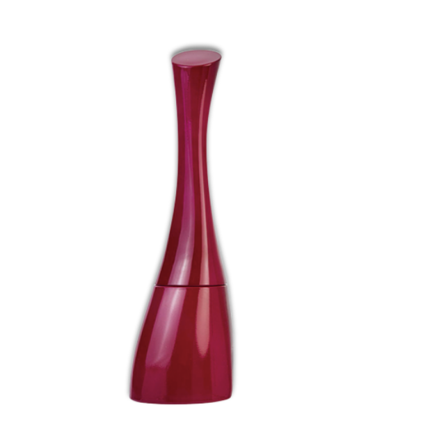

Kenzo Amour

겐조 아무르의 가장 큰 특징은 깔끔하고 여성스러운 느낌이 강하다.
세 가지 컬러는 여행의 컬러이며 아시아, 그 중 인도에서 매우 흔하게 찾아볼 수 있다. 이 세 가지 컬러는 겐조 패션의 컬렉션에서 이미
많이 사용되어 온 것으로 불투명한 용기를 사용한 것은 겐조의 크리에이티브적 감성이며, 겐조 아무르의 컨셉을 반영했다.
커브진 라인의 용기 실루엣은 하늘을 향한 여행을, 전체의 보틀은 휘어진 듯 보이며, 역동적인 느낌을 주지만 안정적이며, 가벼우나 매우 견고하고, 시적이나 현실적이고, 유목민 적이나 자연스럽다.
유기적인 커브를 통해서 자연을 내포하고 있는 보틀의 모양은 순수하며, 진실하고, 테크놀로지에서 자유롭다.
세 가지 컬러는 여행의 컬러이며 아시아, 그 중 인도에서 매우 흔하게 찾아볼 수 있다. 이 세 가지 컬러는 겐조 패션의 컬렉션에서 이미
많이 사용되어 온 것으로 불투명한 용기를 사용한 것은 겐조의 크리에이티브적 감성이며, 겐조 아무르의 컨셉을 반영했다.
커브진 라인의 용기 실루엣은 하늘을 향한 여행을, 전체의 보틀은 휘어진 듯 보이며, 역동적인 느낌을 주지만 안정적이며, 가벼우나 매우 견고하고, 시적이나 현실적이고, 유목민 적이나 자연스럽다.
유기적인 커브를 통해서 자연을 내포하고 있는 보틀의 모양은 순수하며, 진실하고, 테크놀로지에서 자유롭다.